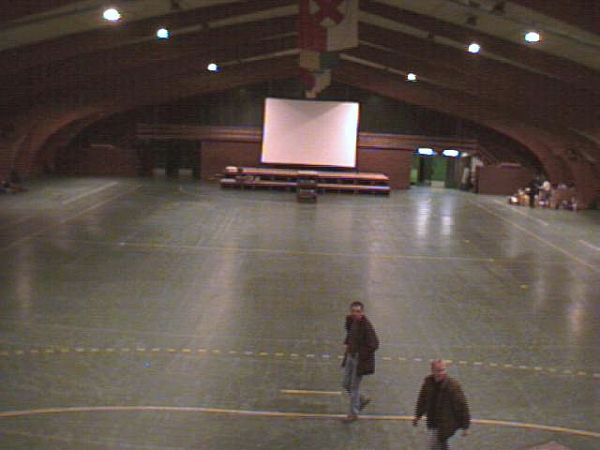

This year, the two famous German Demo Partie combined to stop concurencing each other.
From Friday 28 to Monday 31 March 1997 took place one of the biggest C64 parties (also multi-plateform) in
Fallingbostel, about 100 km south of Hamburg.
Full results here.

[ >NEWS /
>PEOPLE /
>PARTIES /
>MISC /
>LINKS /
>FAQ /
>CREDITS ]